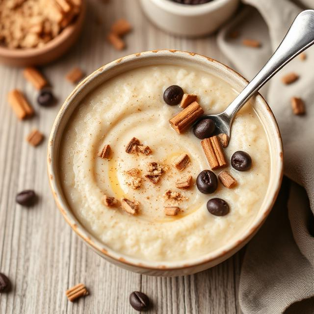

Porridge

Description
This porridge made with oats, bananas, and cinnamon is a favorite winter breakfast of ours. It's hearty, warming, and tastes delicious!
This naturally sweet breakfast comes together with just rolled oats, bananas, and cinnamon. In just 15 mins total.
Ingredients
- 2 ½ cups water
- 1 cup rolled oats
- 1 tablespoon white sugar, or to taste (Optional)
- 1 teaspoon salt, or to taste (Optional)
- 2 bananas, sliced
- 1 pinch ground cinnamon
- ½ cup cold milk (Optional)
Steps
- Gather all ingredients.
- Combine water and oats in a saucepan; season to taste with sugar and salt. Add bananas and cinnamon.
- Bring to a boil, then reduce heat to low, and simmer until the liquid has been absorbed, stirring frequently.
- Pour into bowls, and top each with a splash of cold milk.
Home